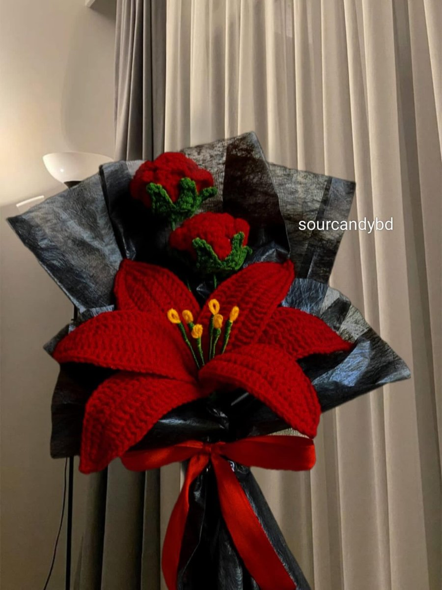
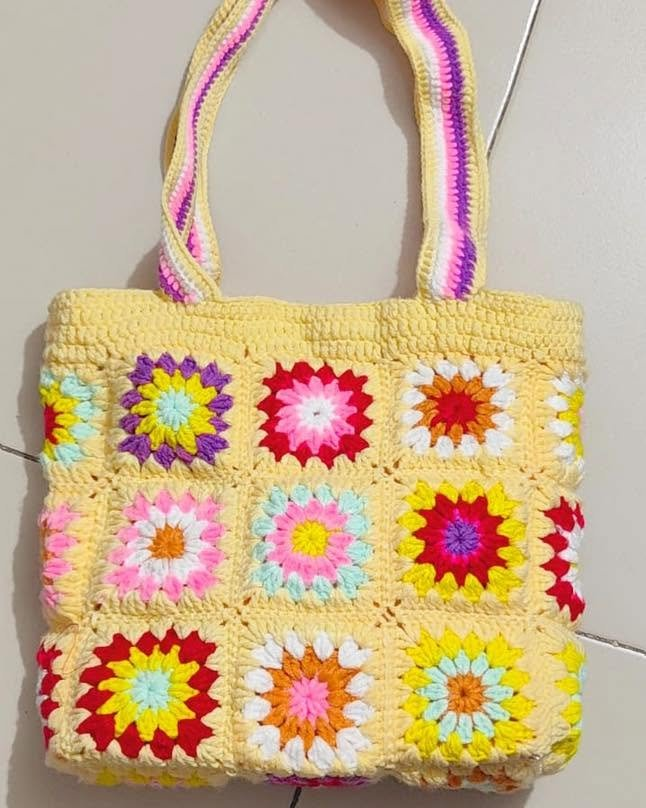
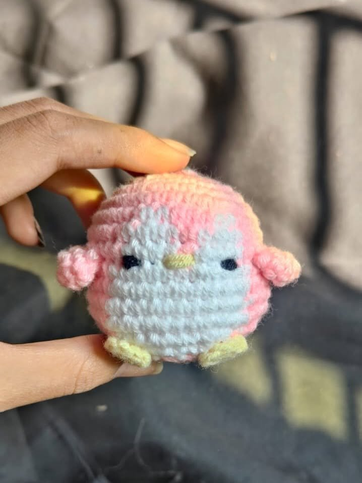
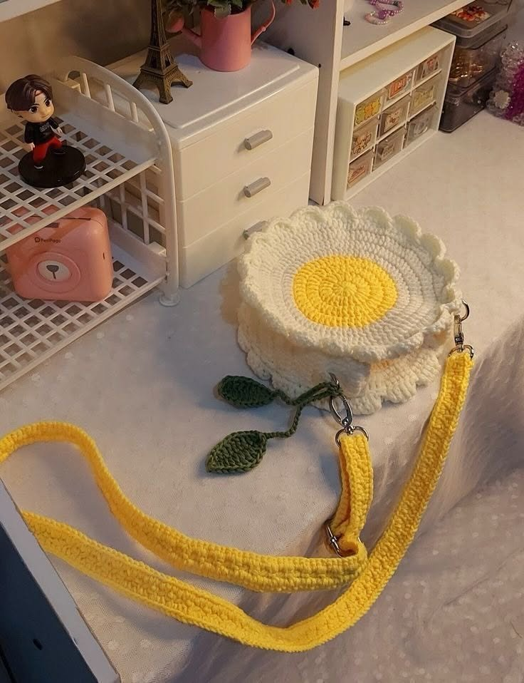
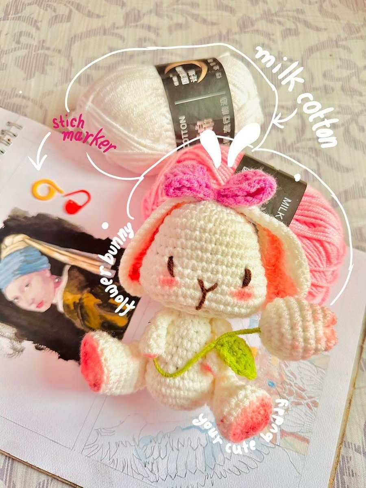

🎓
B.Sc. in Computer Science & Engineering
Major in Software Engineering. CGPA 3.44 out of 4.00.
Portfolio · 2026
Aspiring |
Software Engineering graduate, FYDP researcher in autonomous vehicular networks, and aspiring web & AI-driven developer — also founder of handmade brand SourCandybd.
Who I am
I'm Mst Tonni Islam, a Computer Science & Engineering graduate from United International University, Dhaka, majored in Software Engineering. I'm passionate about merging technology with creativity, and I'm looking for a web or software development internship where I can learn fast and contribute from day one.
On the academic side, my Final Year Design Project focuses on autonomous vehicular networks, and I'm especially curious about AI-driven software development. On the creative side, I run SourCandybd, a handmade crochet business, and work as a Digital Marketing Executive, so I think about the people using a product, not just the code behind it.
Academic journey
Major in Software Engineering. CGPA 3.44 out of 4.00.
GPA 5.00 out of 5.00 · Gold Scholar.
GPA 5.00 out of 5.00 · Scholarship.
What I've built
A responsive web calculator that estimates product purchase and delivery cost from price, exchange rate, service charge and weight. Deployed online for real use.
A machine-learning system that recognizes sign language gestures from image and video input and turns them into text.
A web application for elderly users and caregivers, designed around accessibility and simple navigation, with user flows and wireframes.
A music-streaming platform concept built around ad-free, uninterrupted listening, with an architecture design covering scalability and reliability.
Academic work
My Final Year Design Project at UIU focuses on Autonomous Vehicular Networks (AVN): intelligent systems where connected, self-driving vehicles communicate and coordinate in real time. The work explores vehicle-to-everything (V2X) communication, traffic-aware routing, safety-critical decision making, and how AI-driven protocols can improve reliability, latency and scalability on the road.
Where I work
I carry out SEO-related work to improve search visibility and website performance, bringing a software engineering mindset to digital marketing.
Entrepreneurship
Beyond code, I run SourCandybd, a handmade crochet business selling customisable products across Facebook and Instagram. Every item is handcrafted by me, from crochet bags and amigurumi toys to floral bouquets.
The brand has grown to 808+ Instagram followers and 1.5K+ Facebook followers, with 257+ posts. Orders are taken via DM.





Say hello
I'm open to web and software development internships, especially roles that touch AI-driven development. The best way to reach me is by email.